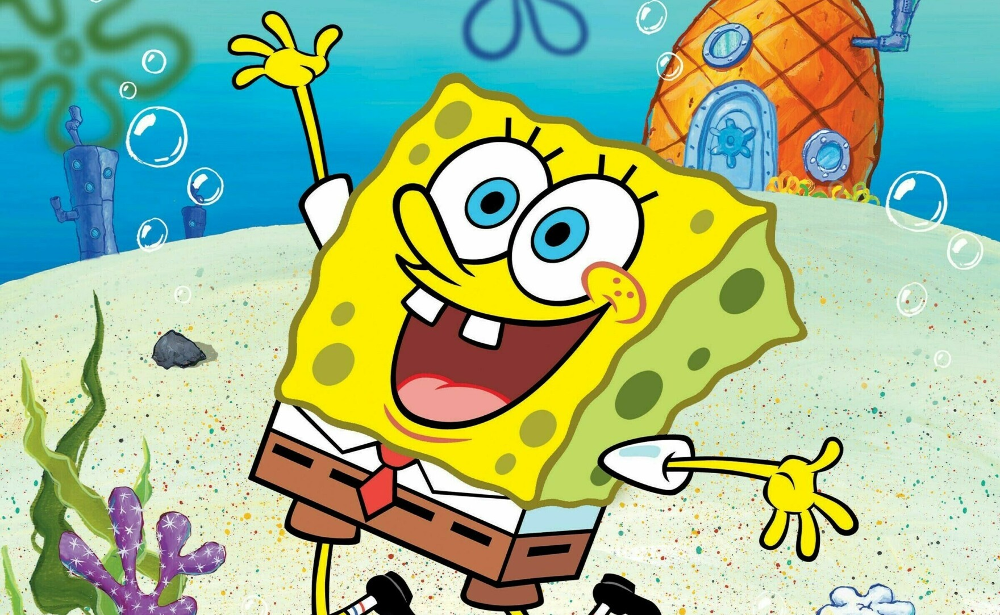

SpongeBob SquarePants is a cheerful and energetic sea sponge who lives in Bikini Bottom. He works as a fry cook at the Krusty Krab and is known for his optimism, hard work, and love for jellyfishing. He spends most of his time with his best friend Patrick Star and his neighbor Squidward.